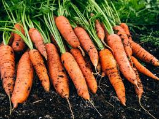
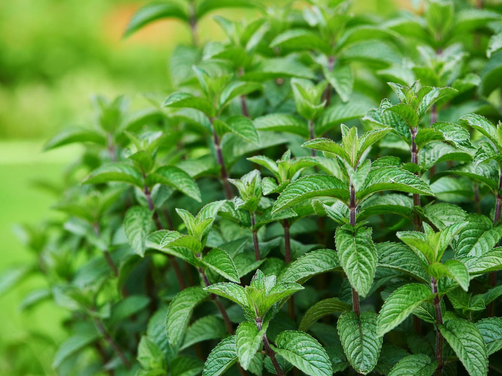

Ubicación
INTERIOR PARQUE, PASAJE # 34, Rumipamba E6-264 Y, Quito 170135
(+593) 0983420579
invernaderosaludable@gmail.com
Horarios
Lunes a Viernes
7:00 - 21:00
Sábado y Domingo
7:00 - 13:00
"Viva Tierra"
En Viva Tierra , cultivamos algo más que frutas y vegetales: cultivamos un estilo de vida saludable, consciente y en armonía con la naturaleza. Somos un invernadero dedicado a la producción orgánica, donde cada planta crece sin químicos, pesticidas ni fertilizantes artificiales, respetando los ciclos naturales y el equilibrio del ecosistema. Nuestra historia nace del amor por la tierra y el deseo de ofrecer alimentos limpios, frescos y llenos de sabor. Creemos que lo que comemos transforma nuestra salud y nuestro entorno, por eso cuidamos cada etapa del proceso con compromiso, desde la semilla hasta la cosecha. En nuestras instalaciones utilizamos técnicas sostenibles, aprovechamos los recursos de manera responsable y fomentamos prácticas amigables con el medio ambiente. Apostamos por la calidad, la transparencia y el trato cercano con cada persona que confía en nosotros. Te invitamos a conocer nuestros productos, nuestras raíces y nuestra pasión por lo orgánico. Porque esto no se trata solo de cultivar, sino de conectar con la tierra, con la vida... y contigo.
Nuestras hortalizas orgánicas son cultivadas con esmero y sin el uso de químicos. Cada hoja y cada fruto crecen en un ambiente controlado, limpio y natural, lo que garantiza un sabor auténtico y una textura fresca. Desde lechugas crujientes hasta zanahorias dulces y pepinos jugosos, llevamos a tu mesa lo mejor del huerto.
Pequeñas pero poderosas, nuestras hierbas aromáticas están llenas de aroma, sabor y propiedades beneficiosas para la salud. Cultivadas de forma orgánica, aportan ese toque especial a tus comidas mientras fortalecen el vínculo con la cocina natural. Entre nuestras variedades encontrarás albahaca, orégano, menta, romero, tomillo y más.
Nuestras frutas son el resultado de un cultivo paciente, natural y respetuoso con la tierra. Dulces, jugosas y llenas de nutrientes, cada una refleja el cuidado con el que fue sembrada y cosechada. Desde fresas y frambuesas hasta melones y arándanos, ofrecemos productos frescos, de temporada y siempre libres de químicos.
INTERIOR PARQUE, PASAJE # 34, Rumipamba E6-264 Y, Quito 170135
(+593) 0983420579
invernaderosaludable@gmail.com
Lunes a Viernes
7:00 - 21:00
Sábado y Domingo
7:00 - 13:00